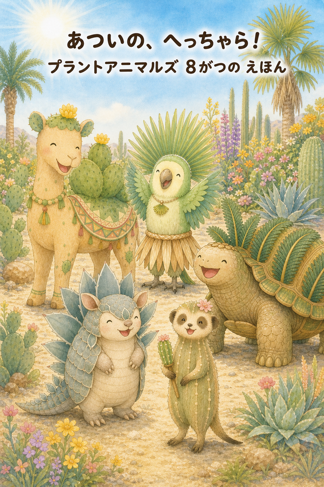
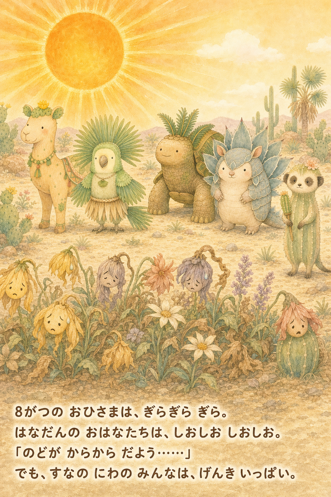
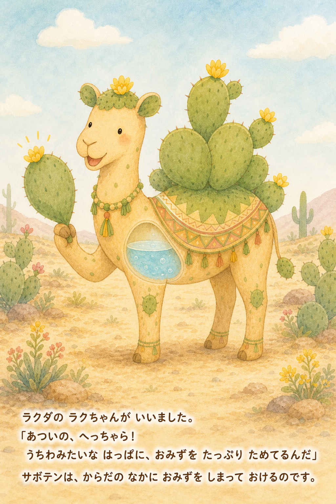
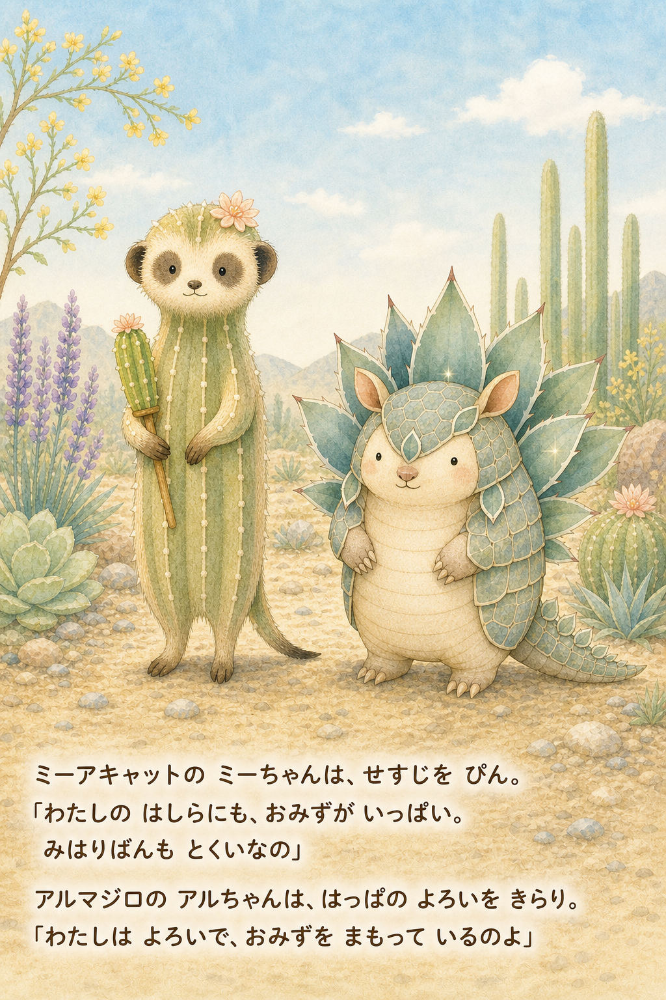
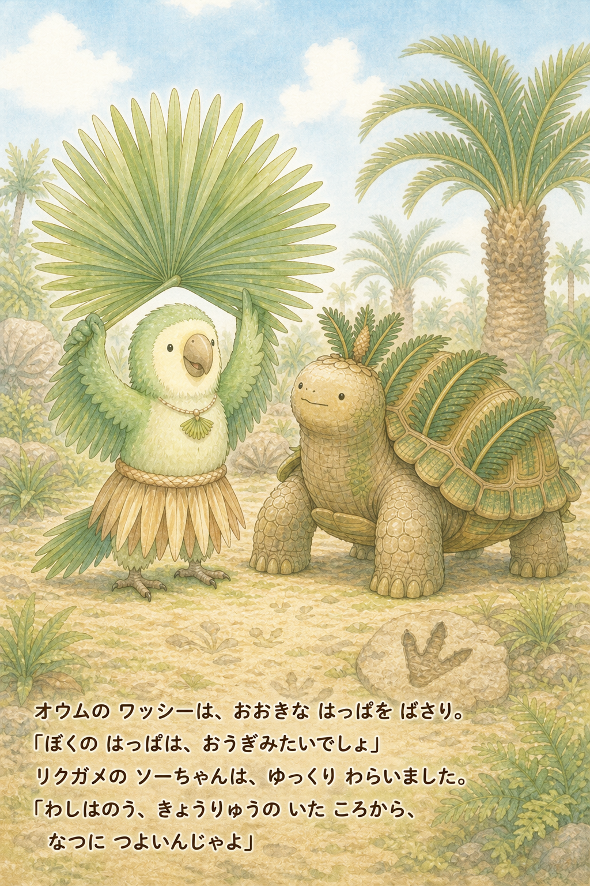
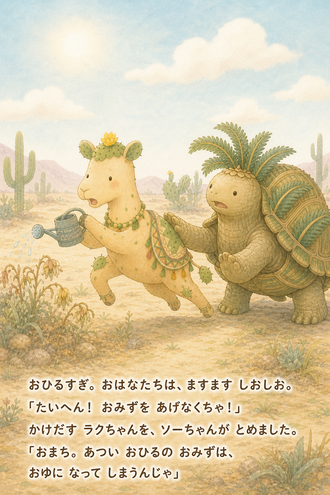
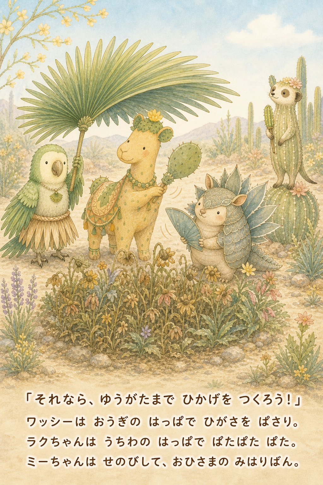
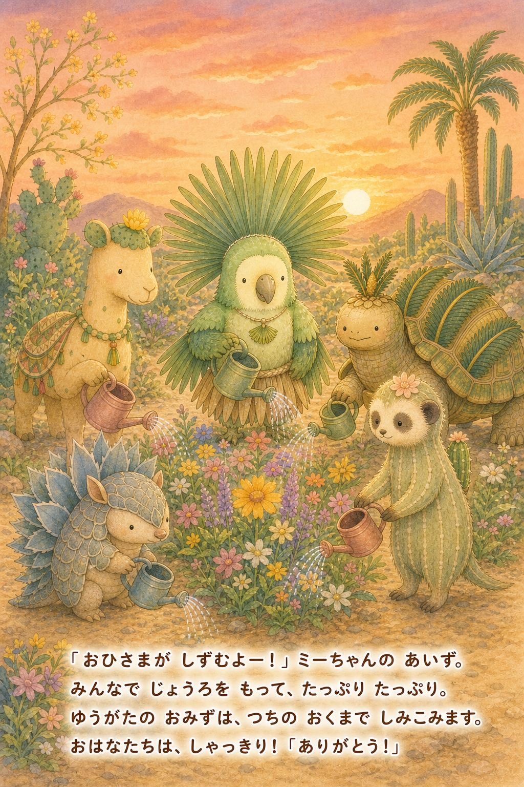
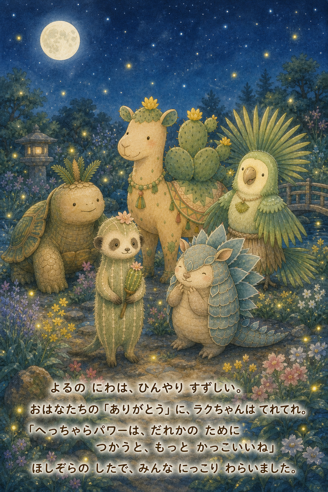

あついの、へっちゃら！
真夏の庭でしおしおの花たちを、暑さに強いドライガーデンの5匹が「へっちゃらパワー」で助ける8月のおはなしです。
スマホでは、下へスクロールして1ページずつ読めます。本文も絵の中に描かれています。









物語は植物の特徴をもとにした創作です。
真夏の庭でしおしおの花たちを、暑さに強いドライガーデンの5匹が「へっちゃらパワー」で助ける8月のおはなしです。
スマホでは、下へスクロールして1ページずつ読めます。本文も絵の中に描かれています。









物語は植物の特徴をもとにした創作です。